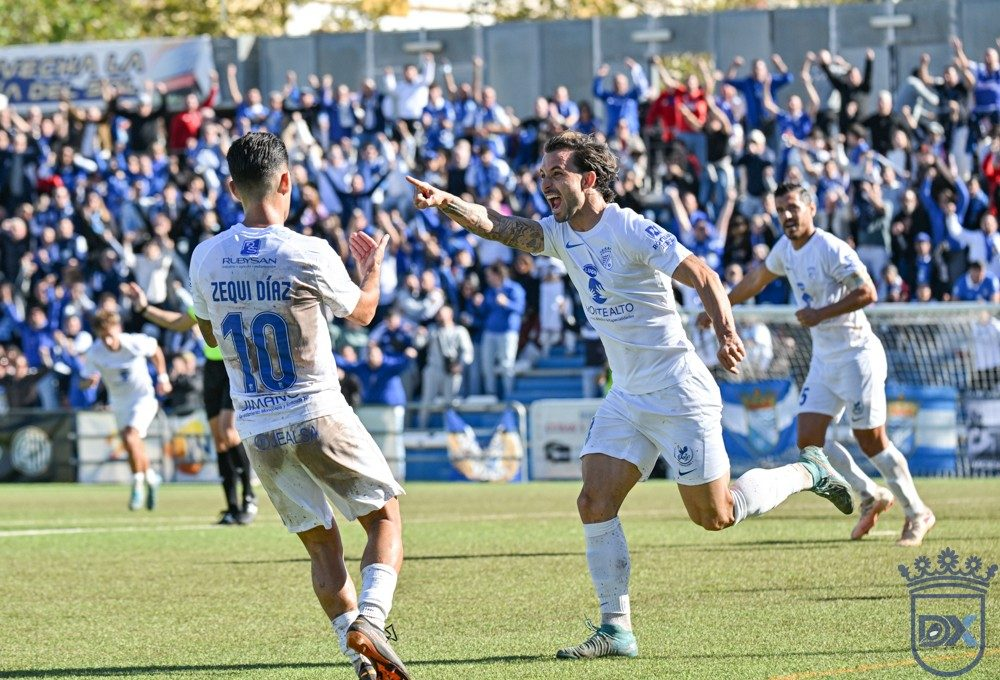

An unstoppable Xerez tighten their grip on the top of the table (0-2)
First-half goals from Chacartegui and Zeki give Abel Segovia's side their fifth win in a row at Atlético Central, who had conceded only one goal at home. More than 1,000 Xerez fans filled the Preferencia stand.

Xerez CD made it five wins in a row on Sunday with a 0-2 victory over Atlético Central at the Ciudad de Alcalá, on matchday twelve of Segunda RFEF Group IV. Chacartegui (23') and Zeki (42') scored in the first half against opponents who had conceded only one goal at home. Abel Segovia's side kept another clean sheet and could have extended their lead after the break: Julito hit the crossbar, Manu Galán struck the post and Zelu missed a one-on-one.
Before kick-off, the two sets of supporters swapped scarves and celebrated their friendship at the Ciudad de Alcalá, where more than 1,000 Xerez fans filled the Preferencia stand.
Four enforced changes
Segovia made four changes from the side that beat Antoniano, all of them forced. Rubén Mesa led the line in place of the injured Chuma. In defence, Manu Galán replaced the suspended Moi and Josete came in for Fali, who was injured in Saturday's training session after a heavy knock. Guille Campos returned at right-back in place of Víctor López. Atlético Central fielded two familiar faces from the Xerez promotion side: goalkeeper Santos and Álex del Río, who played at centre-back in place of the suspended Bornes.

The game started at a high tempo. The hosts, more used to the dimensions of their pitch, sent balls into the box without much danger, while Xerez looked to keep possession through Isma, Peregrina and Julito. In the 12th minute, Zeki cut into the box, beat three opponents and his shot towards the top corner went just wide. Shortly afterwards, he lost the ball in midfield and the hosts broke, but Josete cut out the danger in time.
Chacartegui opens, Zeki seals it
The opener came in the 23rd minute, from the third corner. Zeki played it short and Chacartegui moved it on to Isma, who crossed to the far post. Manu Galán controlled it there and sent it across to the other post, where Chacartegui, unmarked, headed in. Atlético Central pushed forward, but the clearest chance again fell to Xerez. Just after the half-hour, Rubén Mesa wasted a superb pass from Peregrina on the counter, and Isma sent the rebound wide. Santos also had to punch away a powerful shot from Zeki.
The second goal came in the 42nd minute, from another counter-attack: Isma provided the assist and Zeki finished at the far post. It was 0-2 at half-time.
Chances for a rout
After the break, Marcos Contreras had to replace the injured Raúl Navas, Atlético Central's captain, with Sotero, while Segovia kept the same eleven. Pantoja saved a shot from Condán straight after the restart, and in the 48th minute Santos produced a fine save to keep out a low drive from Peregrina. Guille Campos picked up his fifth yellow card for a dangerous foul and will miss the game against Linares.

Xerez pressed in midfield and broke quickly. Julito fired over from the edge of the box and, with Zelu and Jaime López already on for Peregrina and Zeki (66'), he hit the crossbar with another effort that took a deflection. Rubén Mesa could not convert the rebound. Zelu was denied by Santos in a one-on-one and later shot over, and in the closing stages Manu Galán sent a corner against the post.
The Xerez fans celebrated a win that consolidates the team near the top of the table.
Xerez move on to 21 points and five straight wins, near the top of the table.Their position depends on the rest of the matchday 12 results